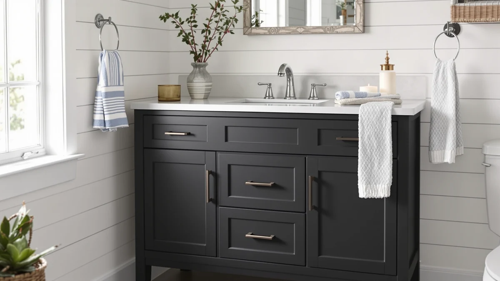

LUCKWIND 72" Bathroom Vanity Review (2026): Worth It?
Prices and picks verified as of October 2026. Independent, reader-supported reviews.


Quick Answer
The LUCKWIND 72" Bathroom Vanity Sink is a dual-sink, MDF cabinet priced at $849.99, built for bathrooms with a full 72 inches of wall space to spare. Against the three smaller, single-sink alternatives in this review, it costs more upfront but splits that cost across two basins instead of one, which changes the value math for two-person bathrooms. If you have the wall space and need two sinks, it is the strongest pick among the four vanities we compare here.
Our pick: LUCKWIND 72" Bathroom Vanity Sink, $849.99 Check Price on Amazon
Bottom line: our top pick is the LUCKWIND 72" Bathroom Vanity Sink Combo at $849.99.
Things to Know Before You Buy
- A 72-inch vanity needs a dedicated, uninterrupted wall run plus room on both sides for the doors and drawers to swing open, so measure your bathroom before you buy.
- The cabinet is MDF (engineered wood), not solid hardwood, so the usual engineered-wood cautions around standing water and cabinet seals apply.
- At $849.99, it's the second most expensive of the four vanities in this review, behind the Deluxe Living 42-inch model, but it's the only one with two sinks.
- Dual-sink layouts fit two-person households well, but if only one person uses the bathroom, a single-sink vanity will save both money and floor space.
- None of the four listings in this comparison include a published warranty length, so treat standard engineered-wood cabinet care as the baseline regardless of which one you choose.
If you share a bathroom with a partner and you're tired of waiting for sink access every morning, this luckwind 72" bathroom vanity review walks through whether a dual-sink cabinet is the fix, and whether this particular one justifies its $849.99 price. Two people brushing their teeth at the same basin at 7 a.m. is a small daily friction, but it adds up, and a 72-inch vanity is the most direct way to remove it without renovating the whole room.
We compared the Luckwind against three smaller, single-sink vanities, the Tennant Brand 30-inch vessel sink, the Deluxe Living 42-inch, and the Deluxe Living 36-inch, to see where the extra cost of a second basin actually pays off. The short version: if your bathroom has 72 contiguous inches of wall space and two people use it daily, the Luckwind's per-sink cost compares well against buying two separate single-sink vanities, and it's the pick we'd point most dual-sink shoppers toward in this group.
Why You Should Trust Us
Ilane Tall covers bathroom fixtures and vanities for Best Bathroom Vanities, with a focus on comparing published specs, current pricing and verified buyer feedback rather than marketing copy. This luckwind 72" bathroom vanity review is built from the manufacturer's listed dimensions and materials, Amazon's current and historical pricing for all four vanities covered here, and patterns we found in publicly available owner feedback. We don't install or live with every vanity we cover, so we say so plainly instead of implying a physical install we didn't run. That means every claim below is tied to a spec, a price, or a reported pattern, not a guess.
How We Compared
Our process for this luckwind 72" bathroom vanity review was research-based: we compared the manufacturer's listed cabinet material, dimensions and sink configuration against the three alternatives, then checked how the pricing moved over recent months on Amazon. We also read through publicly available owner feedback on the Luckwind and the three comparison vanities, looking for recurring themes rather than one-off complaints. We don't operate a physical testing lab and we didn't install any of these cabinets ourselves, so every comparison here rests on listed specs, verified pricing and reported owner patterns, not a physical install. Where a spec wasn't published for a given vanity, such as a specific warranty term or a drawer count, we left it out rather than filling the gap with a guess, which is why this review leans more heavily on the dimensions, materials and pricing that every one of the four listings does include.
Overview & Specs

LUCKWIND 72" Bathroom Vanity Sink
What we like
- Two full sink basins in a single 72-inch cabinet, so two people can get ready at once instead of taking turns at one sink.
- At $849.99 for two basins, the per-sink cost lands close to what a single-sink Deluxe Living 42-inch vanity costs on its own.
- A 72-inch run gives more counter space between the two sinks than you'd get placing two smaller vanities side by side.
Flaws but not dealbreakers
- The cabinet is MDF, not solid wood, so it needs the same moisture care as other engineered-wood bathroom furniture.
- It only fits bathrooms with a full 72 inches of contiguous wall space, which rules out most secondary bathrooms.
| Material | MDF / engineered wood |
| Size | 72"-Dual Sink |
The Luckwind's main selling point is simple: it packs two full sink basins into one 72-inch cabinet, where most of the vanities people shop against it only offer one. That matters most in a shared primary bathroom, where two people getting ready on the same schedule is the actual daily problem a vanity needs to solve. At $849.99, it costs more than any single-sink option in this review except the Deluxe Living 42-inch, but it's also the only one solving the two-sink problem at all, so the price gap reflects two basins against one, not a straight apples-to-apples comparison.
The tradeoff is space and material. You need a genuine 72 inches of uninterrupted wall, which immediately rules this out for a half bath or a secondary bathroom, and the cabinet itself is MDF rather than solid wood. MDF keeps the price down and takes paint and veneer finishes evenly, but like any engineered wood, it depends on intact cabinet seals to keep standing water away from the core material over the long run. For a primary bathroom with the wall space to spare and two people sharing it daily, those tradeoffs are reasonable. For anything smaller, one of the single-sink alternatives below will fit better.
What We Liked
The dual-sink layout is the clearest advantage this luckwind 72" bathroom vanity review surfaced over the three alternatives. The Tennant Brand 30-inch and both Deluxe Living models are single-sink cabinets, so any household that needs two basins would have to buy and install two separate vanities to match what the Luckwind does in one 72-inch piece. That single-cabinet approach also means one set of plumbing lines, one countertop seam to seal, and one install instead of two.
Price per sink is the other point in its favor. At $849.99 for two basins, the Luckwind works out to about $425 per sink, which undercuts the $899.99 the Deluxe Living 42-inch charges for a single basin. If a household needs two sinks, buying one Luckwind instead of two smaller single-sink vanities is likely the cheaper route, even before counting a second set of plumbing labor. A single 72-inch countertop also means one continuous surface instead of two separate tops butted together, which removes a seam where water and grime tend to collect, and it simplifies installation to one set of hardware instead of two.
What Could Be Better
The 72-inch footprint is both the main feature and the main limitation. A cabinet that wide needs a continuous, unbroken wall run, plus clearance on both ends for doors and drawers to swing open, so it simply won't fit in most secondary bathrooms or half baths. The Deluxe Living 36-inch and Tennant Brand 30-inch vanities in this comparison exist precisely because a lot of bathrooms don't have 72 inches to give.
The build material is the second consideration. The cabinet is MDF, an engineered wood, rather than solid hardwood. That keeps manufacturing costs and the price down, but engineered wood is more sensitive to prolonged moisture exposure than solid wood if a seal around a sink basin fails, so the cabinet seams deserve a periodic check regardless of which of these four vanities you buy.
Who Is It For?
This luckwind 72" bathroom vanity review points toward one clear audience: couples or roommates sharing a primary bathroom who have the wall space and actually need two sinks at once. If you're renovating a primary bathroom and the morning sink queue is a real daily friction point, the math on this vanity works out in your favor compared with buying two separate single-sink cabinets.
It's a poor fit for anyone with a smaller bathroom, a single user, or a tighter budget. In those cases, the Tennant Brand 30-inch vessel sink or either Deluxe Living model will cover the actual need without paying for a second basin nobody uses. It's also worth skipping if you're renovating on a short timeline, since a 72-inch cabinet usually means replacing the existing countertop, plumbing rough-ins, and sometimes the surrounding wall finish, rather than a straightforward swap of one vanity for a similarly sized one.
Alternatives to Consider
If the 72-inch footprint doesn't fit your bathroom, or you only need one sink, these three single-sink vanities cover the sizes and budgets the Luckwind doesn't.

Editor’s Pick
Tennant Brand 30" Vessel Sink
A single 30-inch vessel-sink vanity for bathrooms that can't fit a 72-inch cabinet, at $843.90, only $6 less than the Luckwind despite offering one sink instead of two.
$843.90
Check Price on Amazon
Best Value
DELUXE LIVING 42 Inch Bathroom
A 42-inch single-sink vanity for mid-size bathrooms, priced at $899.99, the most expensive vanity in this comparison despite having one basin instead of two.
$899.99
Check Price on Amazon
Premium Choice
DELUXE LIVING 36 Inch Bathroom
A 36-inch single-sink vanity at $799.99, the least expensive pick in this review and a reasonable budget option for a smaller bathroom that only needs one sink.
$799.99
Check Price on AmazonIs the Luckwind 72-inch bathroom vanity worth the price?
At $849.99 for two sinks, it works out to roughly $425 per basin, close to what the single-sink Deluxe Living 42-inch model costs alone.
What size bathroom do you need for a 72-inch vanity?
You need a contiguous wall run of at least 72 inches, plus clearance on both sides so the doors and drawers can open fully.
Frequently Asked Questions
Is the Luckwind 72-inch bathroom vanity worth the price?
At $849.99 for two sinks, it works out to roughly $425 per basin, close to what the single-sink Deluxe Living 42-inch model costs alone. For a household that needs two sinks, that math favors the Luckwind. For a single user, the Tennant Brand 30-inch vessel sink covers the same need for less money.
What size bathroom do you need for a 72-inch vanity?
You need a contiguous wall run of at least 72 inches, plus clearance on both sides so the doors and drawers can open fully. That rules it out for most secondary bathrooms and half baths, which is where the 30-inch and 36-inch alternatives here fit better.
Is the Luckwind vanity cabinet solid wood?
No, the cabinet is MDF, an engineered wood product, not solid hardwood. MDF takes paint and veneer finishes evenly and keeps the price down, but it depends on intact cabinet seals to keep standing water around the sink basins away from the material underneath.
Final Verdict
This luckwind 72" bathroom vanity review comes down to one question: do you actually need two sinks? If your bathroom has 72 inches of wall space and two people share it every day, the LUCKWIND vanity's $849.99 price covers two basins for roughly what one single-sink competitor charges for its $899.99 Deluxe Living 42-inch model. That makes it the strongest dual-sink value among the four vanities compared here. If you don't have the space or the second sink isn't necessary, the Tennant Brand 30-inch vessel sink or the Deluxe Living 36-inch model will serve you better for less money. Either way, measure your wall space before you buy, since the biggest factor separating these four vanities is whether your bathroom has 72 inches to give, not brand or finish.